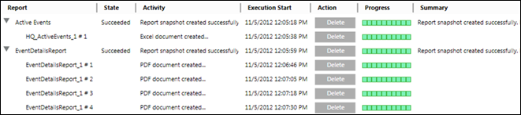

Report Management Section
The Report Management section displays the Report execution status, such as PDF/XLS document creation status, during Report execution. The Report execution/generation mode is called Run mode.
It also provides quick and easy navigation to different Report snapshots. When you select a snapshot in the Report Management section, it displays in Reports.
If you have executed a report and both, a PDF and Excel document are generated from it, you can quickly switch between the two using the Report Management section.
The Reports toolbar has a toggle icon called Report Management, which shows or hides the Report Management section.
This section is visible at the bottom of the Reports window.
The Report snapshot of an executed Report Definition in the Report Management section is available until the user logs out.
The snapshots in the Report Management section are displayed in a hierarchical manner.
For example, if you execute a Report and then view it as a PDF or Excel (XLS) document, then in the Report Management section,
the first entry is of Report execution and the second entry is the PDF/XLS creation as displayed in the following image.

You can also monitor the PDF/XLS document creation progress and stop it by using the Stop button.
However, if you stop the PDF/XLS document creation when it is in progress, the consecutive split document creation will also be stopped.
You can delete the split document by using the Delete button or all the documents by deleting the Report snapshot entry.
The entry of each split document in a Report Management section is a child of the entry for the Report snapshot.
Selecting any document entry, displays the document linked to that entry in Reports.

NOTE:
This section does not display when the report is executed for a selected event from Assisted Treatment.
Report Management Section Components | |
Field | Description |
Header | Displays the name of the reporting object currently executing. For example, the Report Definition name when executing a report. |
State | Displays the execution state of a Report, PDF, XLS. For example, Pending, Succeeded, Failed, and so on. |
Activity | Displays the description of the task being performed. |
Execution Start | Displays the execution start date and time. |
Action | Displays theStop button when the execution of a reporting object starts. When the execution is finished, the Stop button changes to the Delete button. |
Progress | Displays the Progress information in a progress bar to indicate the execution progress. |
Summary | Displays the execution summary. |